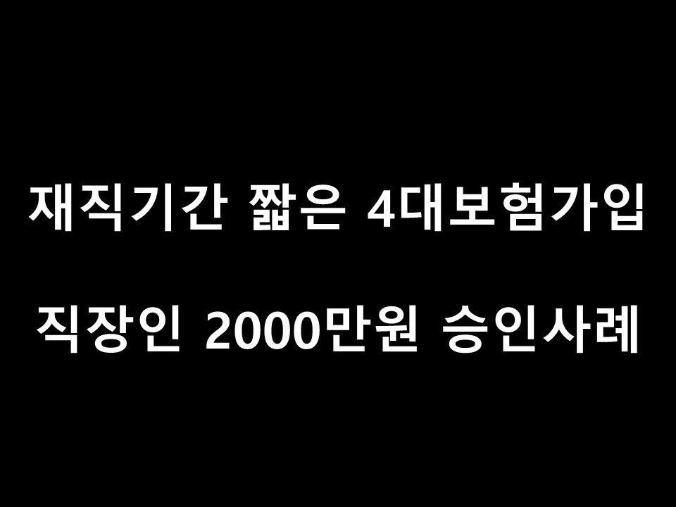
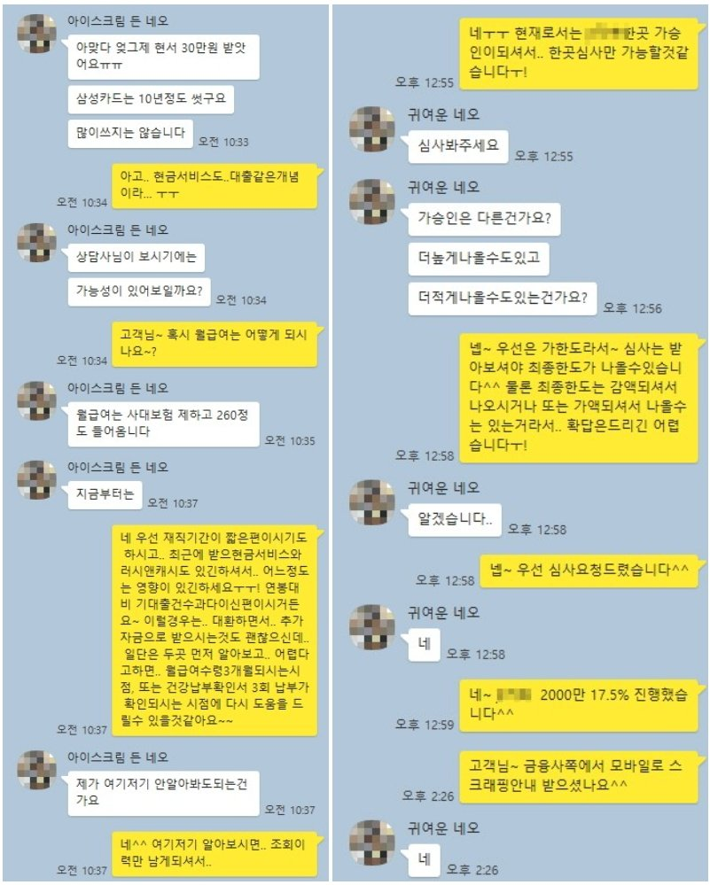

재직기간 짧은 4대보험가입 직장인 2000만원 승인사례

안녕하세요~ 뱅크앤론 상담원 백진주입니다~~^^
오늘은 제가 상담드린 이**고객님의 대출 사례를 안내해 드리겠습니다.
이**고객님께서는 4대보험이 가입되신 재직2개월 급여는 260만원 통장수령 하고계셨습니다.
이직텀은 1개월이 있으셨지만 이전직장같은 경우 4대 미가입에 현금수령을 하고계셔서 확인이 불가했습니다.
기대출은 오케이1000만원, 러시앤캐시300, 리드코프250,우리금융 650,현금서비스 100 2300만원이였습니다.
고객님께서는 필요하신 자금은 최대한 추가자금이 필요하셨고, 고객님 경우 타업체를 통해 금융사를 조회해보셨지만
부결이 되서 저희 뱅크앤론은 카페를 통해서 상담진행으로 신청하셨습니다 .
저는 고객님과 상담을 진행하면서 최근 마지막에 받은 대출이 2개월전에 대부권에서 대출을 받은 이력을 확인했고 재직기간도 짧았으며, 최대한 알아봐드릴 수 있는 금융사 안내를 해드렸습니다.
그 결과 한 금융사에서 2000만원으로 확보하는데 성공하였으며 고객님께서는 매우 만족해 하셨습니다.
추후에 재직기간을 더 채운 후에 다시 이용중인 기대출대환을 저금리로 도움을 드리기로 했습니다.^^
아래는 저와 이**고객님의 카톡상담 내용 일부를 캡쳐한것이오니, 참고하시어 많은 도움 되셨으면 좋겠습니다.
감사합니다^^
